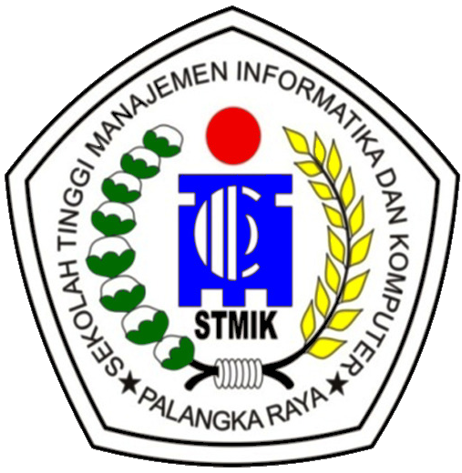

Bandingkan judul penelitian Anda dengan referensi sebelumnya untuk memastikan tingkat kemiripan dan orisinalitas
Prodi
-
Total Judul
Tahun
Sistem akan mengecek kemiripan dengan database judul yang sudah ada